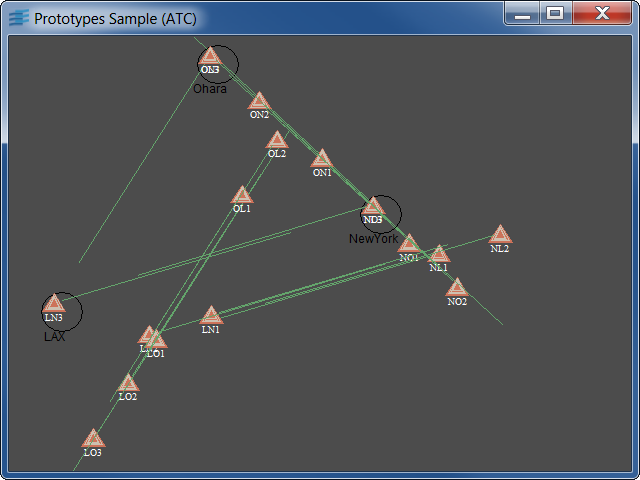

Synoptic with Dynamically-Created Interactive ObjectsShows how to link a prototype to some application objects.
Here the program uses the IlvProtoMediator to create multiple
instances of 'flight' prototypes. Each of these instances
is synchronized to a corresponding 'Flight' in the
air traffic simulator. The file data/easy_atc.cpp describes
the airport and traffic schedule of the simulation.
The basic prototypes given display only speed and direction
of the planes. However, one can add controls onto the prototypes
(using callbacks or event accessors) to enable the user
to edit interactively the attributes of the flight, for example,
speed, direction or altitude.
IlvGroupHolderIlvGroupIlvProtoMediator